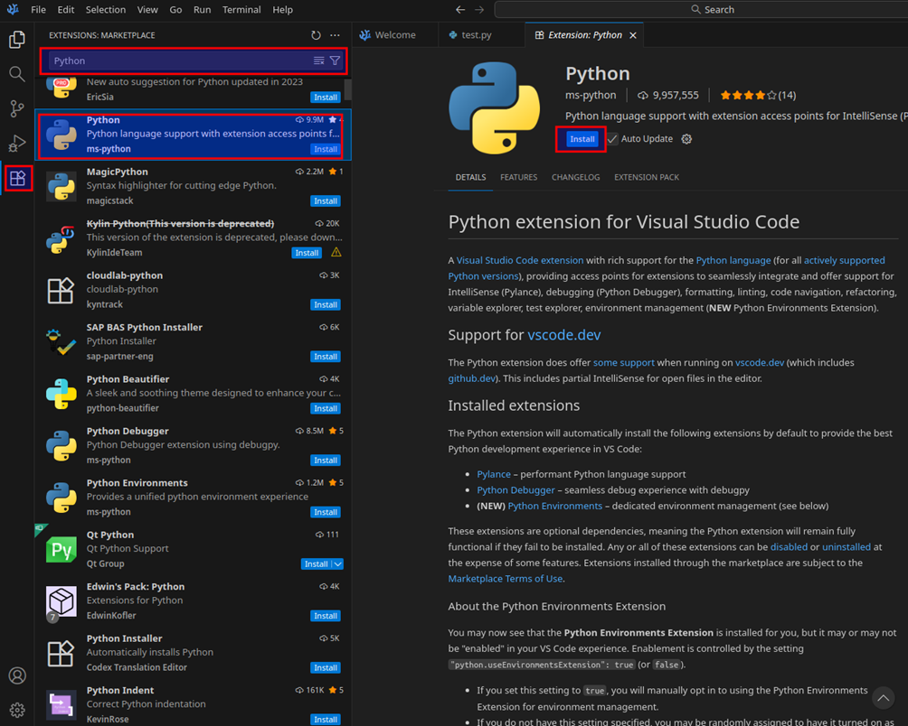
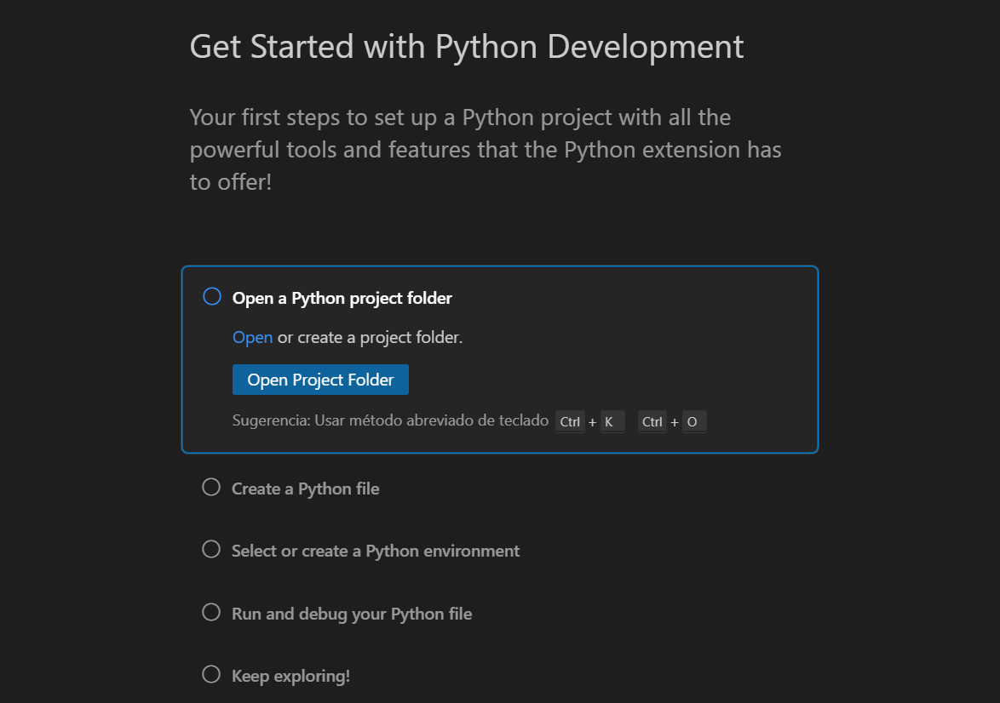
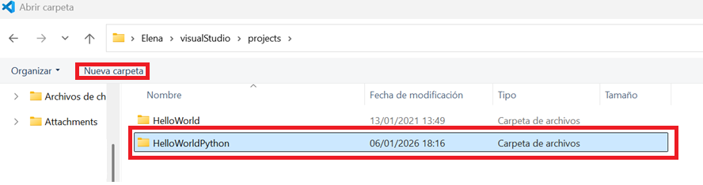
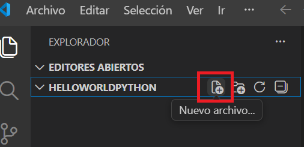
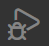
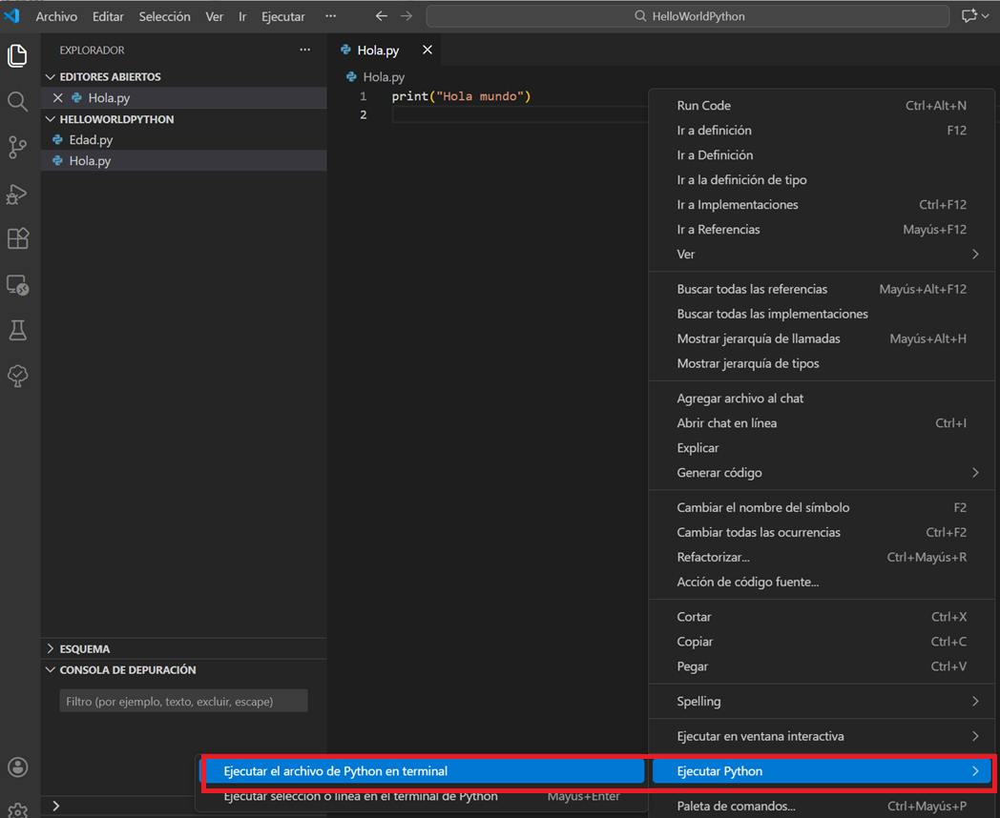
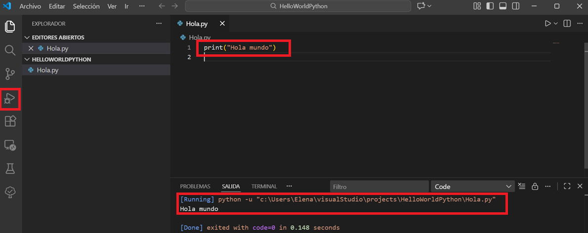

Python¶
Python¶
Python es un lenguaje de programación creado a principios de los años 90 por Guido van Rossum. Conocido por su sintaxis sencilla y legible, su principal objetivo es ser fácil de aprender y usar, lo que lo convierte en una opción popular tanto para principiantes como para desarrolladores experimentados.
Otra de sus ventajas es que cuenta con una enorme biblioteca estándar (las herramientas y utilidades que nos ofrece por defecto), que puede ser extendida con una de las ofertas de bibliotecas de programación más grandes del mundo, creadas y mantenidas por una extensa comunidad de programadores.
Python es ampliamente utilizado en áreas como:
- Desarrollo web: usado en frameworks como Django y Flask.
- Ciencia de datos: aporta potentísimas bibliotecas como pandas, NumPy y SciPy.
- Inteligencia artificial: proporciona herramientas espectaculares como TensorFlow y scikit-learn.
- Automatización: permite implementar tareas de automatización en sistemas operativos y aplicaciones.
- Desarrollo de software: usado para la creación de aplicaciones de escritorio y móviles.
Su nombre es un tributo al grupo de comedia Monty Python, y entre sus muchas virtudes, podemos destacar las siguientes:
- Es un lenguaje multiplataforma, con el que podemos desarrollar aplicaciones de todo tipo (escritorio, web, etc) en diferentes sistemas (Windows, Mac, Linux).
- Es un lenguaje interpretado (no compilado), y puede utilizarse como un lenguaje de script en terminal, como ocurre con Perl, PowerShell u otros lenguajes de script.
- Utiliza tipado dinámico de datos, es decir, no existen tipos de datos implícitos, ni tenemos que indicarlos al utilizar las variables en el programa. A medida que asignamos valores a las variables, éstas toman el tipo de dato adecuado.
- Podemos utilizar Python tanto desde una perspectiva orientada a objetos (usando clases y objetos) como sin dicha perspectiva (sin necesidad de clases).
- Dispone de multitud de paquetes o librerías adicionales que podemos descargar para construir aplicaciones de todo tipo.
Entorno de Desarrollo Integrado (IDE)¶
Antes de comenzar a ver código, necesitamos instalar un IDE –Integrated Development Environment– o «Entorno de Desarrollo Integrado».
Este tipo de programas no es más que un editor de texto, como Microsoft Word o Google Docs, pero específicamente diseñado para la escritura de código con lo que tiene integrado herramientas que agilizan la tarea de programar y facilitan la vida al programador como:
- Resaltan las palabras clave en distintos colores para facilitar la edición de código,
- Autocompleta las etiquetas HTML.
- Ofrecen consejos de ejecución.
Exiten muchos IDE en el mercado. El que nosotros vamos a usar en clase se llama Visual Studio Code y es uno de los entornos de programación más usado actualmente para el desarrollo de programas con Python a nivel profesional.

Ordenadores Aula
Los ordenadores del aula deberían tener Visual studio por defecto, en caso de no ser así se instalará mediante la Zero Center. Seleccionar FP programas y seguidamente Visual Studio Code para windows.

Para poder trabajar con Python, debemos instalar la extensión de Python.

A continuación, abriremos un proyecto de Python.

Creamos la carpeta donde se irán guardando nuestros programas (por ejemplo HelloWorldPyhon).

Creamos un nuevo archivo con extensión .py

Escribimos un código sencillo print("Hola mundo"). Guardamos el fichero y ejecutamos el código desde el debugger

o botón derecho sobre el código Ejecutar Python.
Obteniendo la salida en el terminal.

🎬 En el siguiente vídeo se explica cómo configura Visual Studio Code para Python y crear proyectos paso a paso.
Actividades¶
📝 AA4.7 Primeros pasos con Python¶
(C.ESP1 / CE1.2 / IC1-3p)
Crea una carpeta de proyectos llamado Python en una ubicación de tu elección en tu sistema. Crea el archivo "HolaMundo.py" con el siguiente código : print("Hola mundo") y ejecútalo.
La entrega en aules será una captura de pantalla de tu programa.
📝 AA4.8 Primeros pasos con Python II¶
(C.ESP1 / CE1.2 / IC1-3p)
Crea el archivo "Edad.py" con el siguiente código y ejecútalo.
edad = int(input("Introduce tu edad: "))
if edad >= 18:
print("Eres mayor de edad.")
else:
print("Eres menor de edad.")
print("Programa terminado.")
La entrega en aules será una captura de pantalla de tu programa.